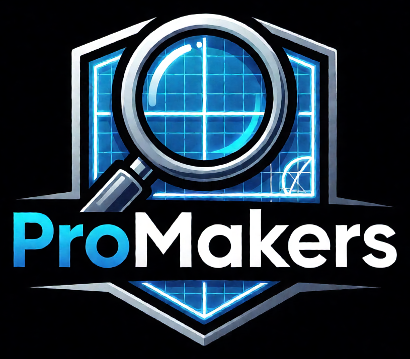

404
Страница не найдена
Похоже, страница, которую вы ищете, была перемещена или удалена. Вернитесь на главную — там всё самое важное.

Похоже, страница, которую вы ищете, была перемещена или удалена. Вернитесь на главную — там всё самое важное.